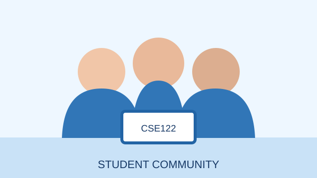

TODO: Tên website
TODO: Viết một câu giới thiệu trang tin.
Tin 1
Tin 2
Tin 3
TODO: Tiêu đề bài 1
TODO: Tóm tắt bài viết.
Tìm hiểu thêm về HTML
TODO: Tiêu đề bài 2
TODO: Tóm tắt bài viết.
TODO: Tiêu đề bài 3
TODO: Tóm tắt bài viết.
